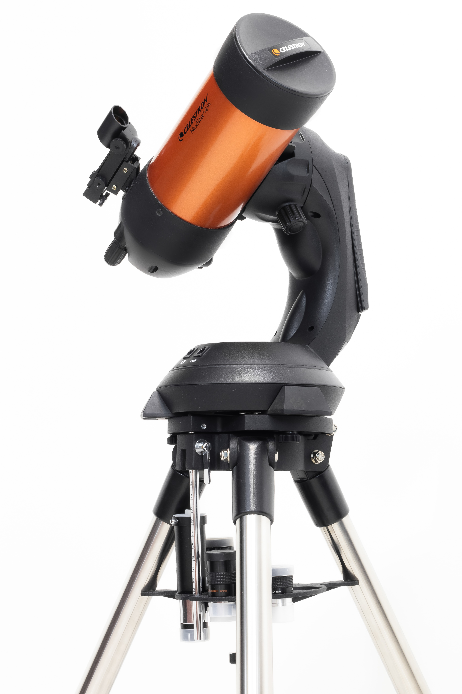

Spring time is an exciting time in the sky...
So we have refreshed our inventory for this special observing event:
April 22 - 23 THE LYRIDS LIGHT UP THE SKY
Radiating from the constellation Lyra, the Lurids produce about 15 meteors per hour, with dust trails that last for several seconds. Isn't that exciting ?!
If that sparks your interest come on in to see what we have to offer in our products section where you can even learn a bit about telescopes!
